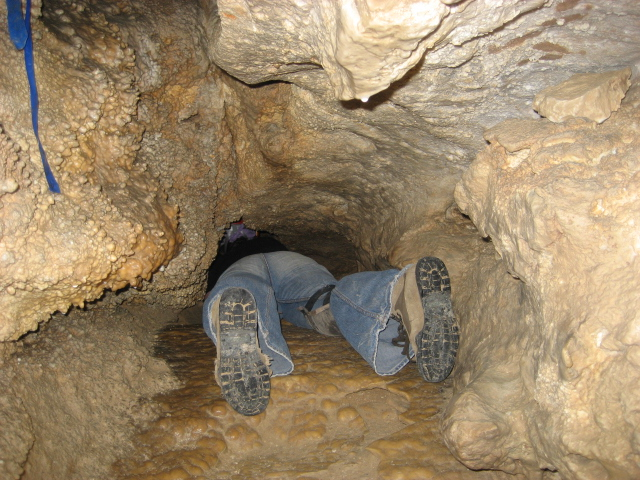

Appalachian States
Alabama, Georgia, Kentucky, Maryland, Mississippi, New York, North Carolina, Ohio, Pennsylvania, South Carolina, Tennessee, Virginia, West Virginia
Cave Facts
- Caves cannot be more than 9,800 feet long because of rock pressure.
- Active caves have water flowing through them; relict caves do not.
- Groundwater naturally dissolves rock with acid over time; commonly known as karst cave.
- Early humans of South Africa have dwelled in caves as far back as 180,000 years ago.
- Only 1% of caves in the world have been discovered.
- TAG has roughly 14,000 known caves—Tennessee, Georgia, Alabama. It used to be a shallow sea.
- Some cave chambers can be as big as entire cities.
- Some states have so many caves, they don’t bother with anything shorter than 30 ft (Tennessee).
Source: softschools.com
Ways for Caves to Form
- Solutional – rainwater dissolves limestone
- Corrosional – a flowing stream that contains rock erodes a passage
- Faults – earthquakes offset rock, which creates chambers and passages
- Glacier caves – the ice is trapped and later melts away
- Sea caves – formed by sea water corrosion
Source: 15 Cool Facts About Caves (That aren’t obvious) – startcaving.com